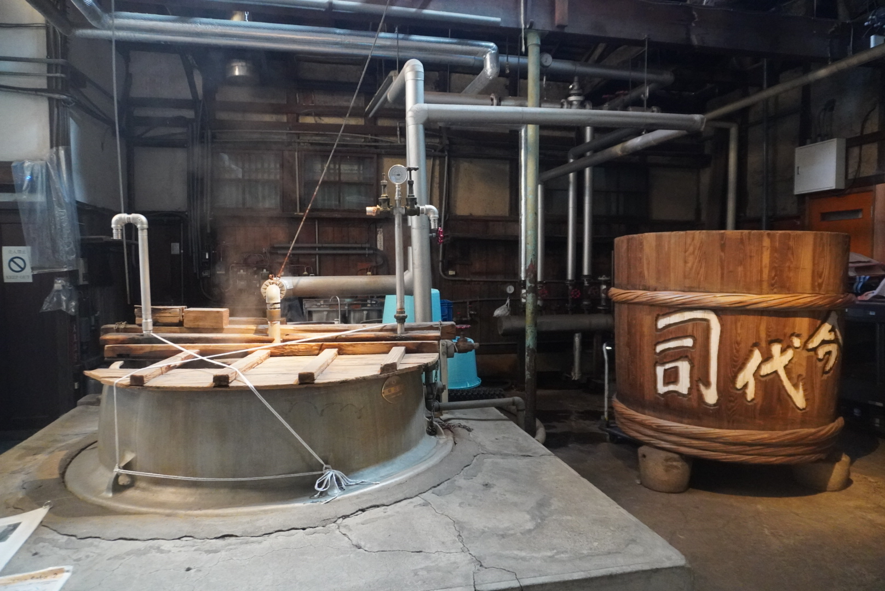
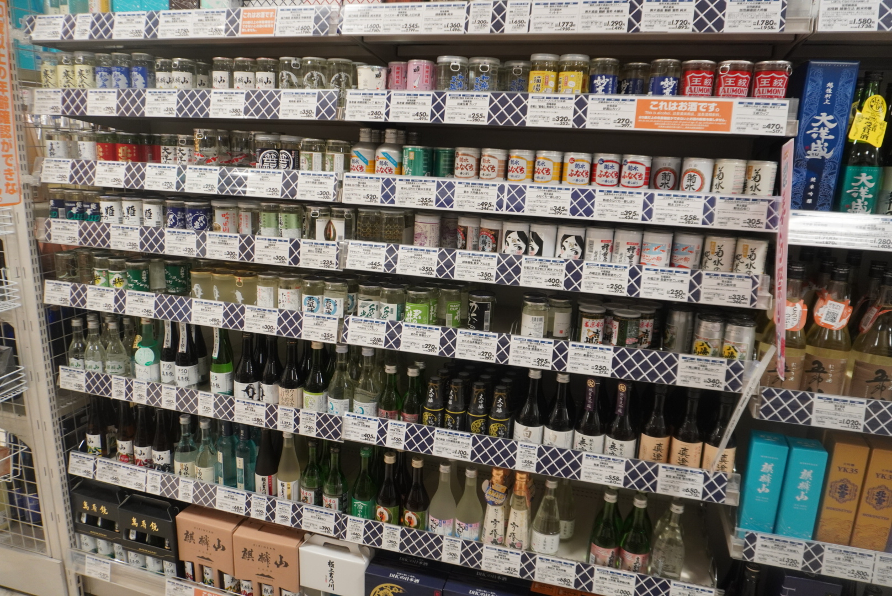
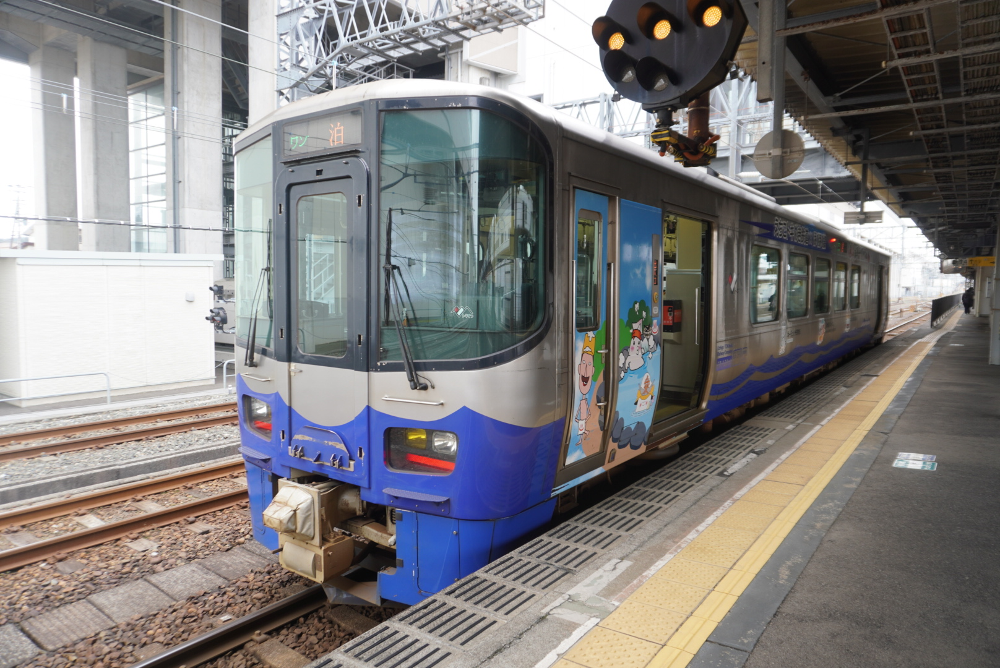
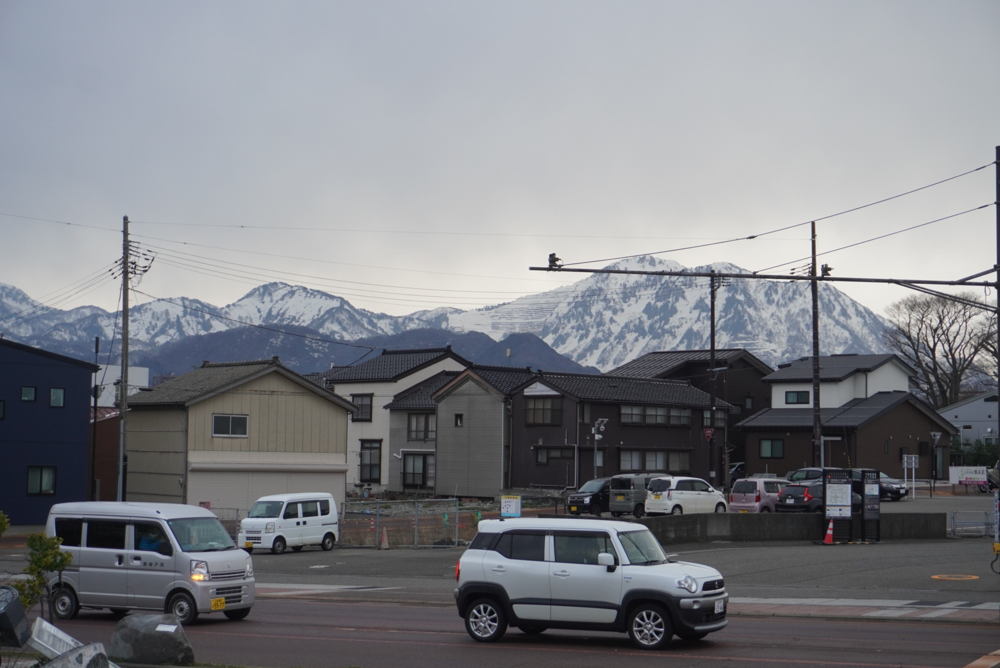
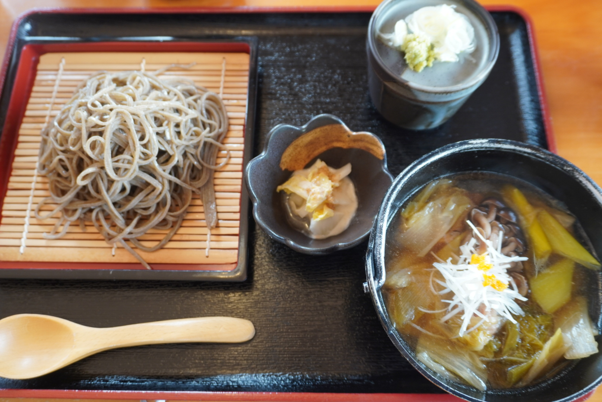
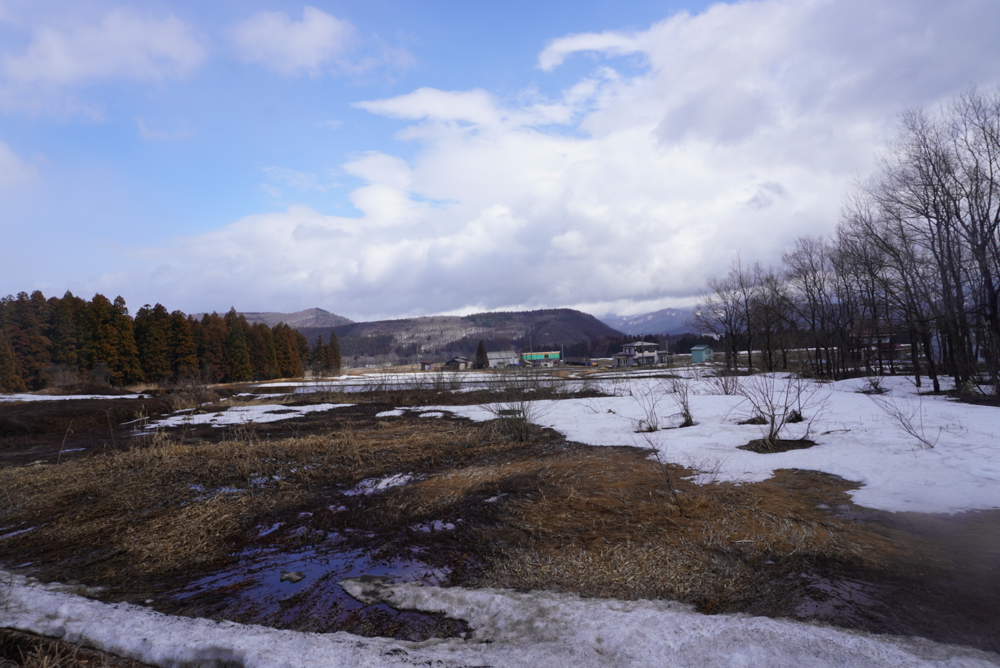
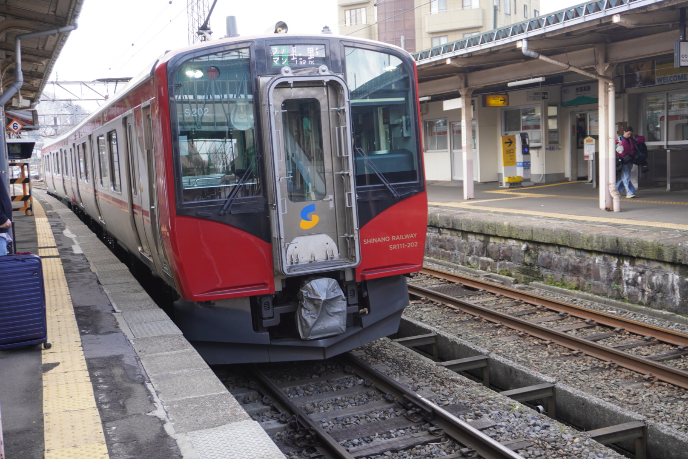
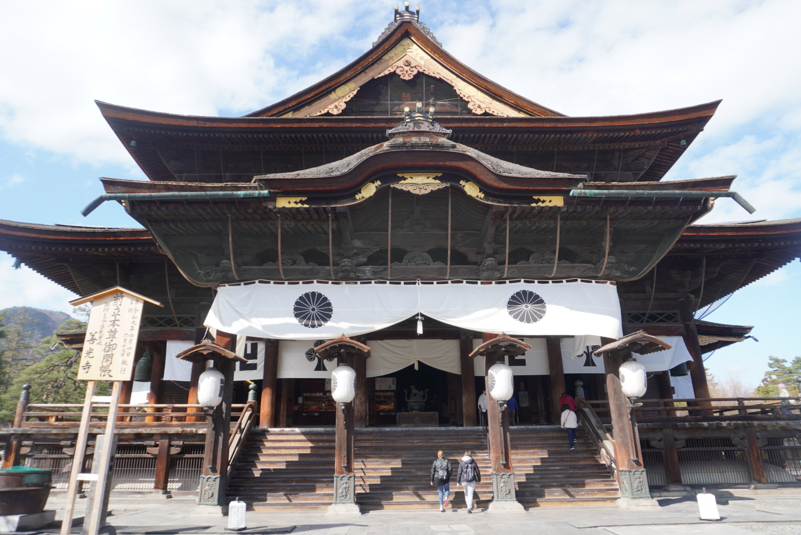

(2026年からの) 旅行・お散歩の記録です。アイコンは飛行機ですが、夜行バス (一睡もできない!) と電車による移動がほとんどです。
新潟・長野 (2026.02.17-19)








上越新幹線で新潟駅へ、そこからJR&えちごトキめき鉄道を乗り継いで、糸魚川に向かって新潟を横断した。そこから長野へ向かい、北陸新幹線で東京に戻るという円を描くような鉄道旅は、素晴らしい思い出となった。 (無茶な計画に付き合ってくれた友人2人のおかげである。感謝するとともに、真っ当な感性の持ち主であれば謝罪するに違いない、と想像してみる。) それにしても酒蔵数ランキング1位・2位を占める新潟と長野だけあって、どこに行っても地酒が付きまとう。「日本酒は体に馴染む。これこそ調和だ!」と豪語する私が自制できるはずもなく、三日三晩飲み続けることとなった。
徳島 (2026.3.12-14)
父の故郷であり、そのおかげでほぼ私の故郷となった徳島へ。19歳!の空海が虚空蔵求聞持法を修め、空海の"空"を名乗るきっかけとなった太龍寺の舎心ヶ嶽に連れて行ってもらった。もはやその空海より年上の私といえば、ボウゼが酢〆でしか提供されないことにばかり気にかけて、「本当に美味しいボウゼの刺身は徳島人が独占しているのではないか」と想像を膨らませるのであった。
群馬 (2026.02.14)


在来線で3時間かけて高崎へ。赤城山を眺めながら縁起だるま発祥の地たる少林山達磨寺に向かい、お寺を散策した。達磨寺では般若心経を1行写経した証に御朱印をもらえる。私の父は御朱印集めをスタンプラリーと思っている節があるので、ぜひとも一度達磨寺を訪ね、自分を見つめ直してほしいものだ。
ちなみに1行写経の前に願意を四字熟語で書き入れるのだが、あとで住職に「Riku the hat 願うところの心願成就」うんたらと読み上げられる。ボケで「腹十分目」と書くことを踏みとどまった私は、胸をなでおろした次第である。
宮城 (2026.2.7-8)


今年初の仙台へ、友人2人と夜行バスで向かった。志波彦神社・鹽竈神社を参拝し、フェリー (芭蕉コース) で松島を訪れ、何気に初めて瑞巌寺に参詣した。塩竈は衆院選2026で話題沸騰の宮城4区に含まれることを知った。